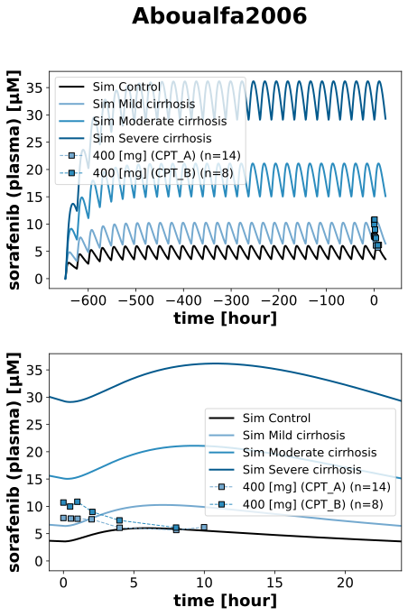

|  |
../../../experiments/studies/aboualfa2006.py
import copy
from typing import Dict
from sbmlsim.data import DataSet, load_pkdb_dataframe
from sbmlsim.fit import FitMapping, FitData
from pkdb_models.models import sorafenib
from pkdb_models.models.sorafenib.experiments.base_experiment import (
SorafenibSimulationExperiment
)
from sbmlsim.plot import Axis, Figure
from sbmlsim.simulation import Timecourse, TimecourseSim
from pkdb_models.models.sorafenib.helpers import run_experiments
class Aboualfa2006(SorafenibSimulationExperiment):
"""Simulation experiment of Aboualfa2006.
400 mg bid in HCC with CTP-A and CTP-B.
PK was assessed in 22 patients on or after 28 days of dosing.
Possible challenge due to the large variability in the CPT groups.
No fit mappings due to liver disfunction.
"""
def datasets(self) -> Dict[str, DataSet]:
dsets = {}
for fig_id in ["Fig5"]:
df = load_pkdb_dataframe(f"{self.sid}_{fig_id}", data_path=self.data_path)
for label, df_label in df.groupby("label"):
dset = DataSet.from_df(df_label, self.ureg)
dset.unit_conversion("mean", 1 / self.Mr.sor)
dsets[label] = dset
# print(dsets.keys())
return dsets
def simulations(self) -> Dict[str, TimecourseSim]:
Q_ = self.Q_
tcsims = {}
for cirrhosis_key in self.cirrhosis_map:
tc0 = Timecourse(
start=0,
end=24 * 60, # [min]
steps=200,
changes={
**self.default_changes(),
"PODOSE_sor": Q_(400, "mg"),
"f_cirrhosis": Q_(
self.cirrhosis_map[cirrhosis_key], "dimensionless"
),
},
)
tc1 = Timecourse(
start=0,
end=24 * 60, # [min]
steps=200,
changes={
"PODOSE_sor": Q_(400, "mg"),
},
)
tcsims[f"sor_po400_{cirrhosis_key}"] = TimecourseSim(
[tc0] + [copy.deepcopy(tc1) for _ in range(27)],
time_offset=-27*24*60
)
return tcsims
def figures(self) -> Dict[str, Figure]:
name = "Fig5"
fig = Figure(
experiment=self,
sid=f"{name}_PO_plasma",
num_rows=2,
num_cols=1,
name=f"{self.__class__.__name__}",
)
plots = fig.create_plots(
xaxis=Axis(self.label_time, unit="hour"),
yaxis=Axis(self.label_sor, unit=self.units["[Cve_sor]"]),
legend=True
)
plots[1].xaxis.min = -1
plots[1].xaxis.max = 24
# simulation
for k in [0, 1]:
for cirrhosis_key in self.cirrhosis_map:
plots[k].add_data(
task=f"task_sor_po400_{cirrhosis_key}",
xid="time",
yid=f"[Cve_sor]",
label=f"Sim {cirrhosis_key}",
color=self.cirrhosis_colors[cirrhosis_key],
)
# data
colors = {
"CPT_A": self.cirrhosis_colors["Mild cirrhosis"],
"CPT_B": self.cirrhosis_colors["Moderate cirrhosis"],
}
for cpt_key, color in colors.items():
plots[k].add_data(
dataset=cpt_key,
xid="time",
yid="mean",
yid_sd=None,
count="count",
label=f"400 [mg] ({cpt_key})",
color=color,
)
return {
fig.sid: fig,
}
if __name__ == "__main__":
out = sorafenib.RESULTS_PATH_SIMULATION / Aboualfa2006.__name__
out.mkdir(parents=True, exist_ok=True)
run_experiments(Aboualfa2006, output_dir="Aboualfa2006")
{kind=link}